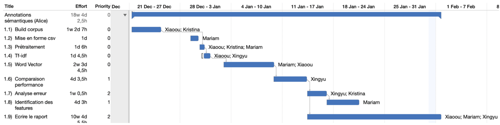
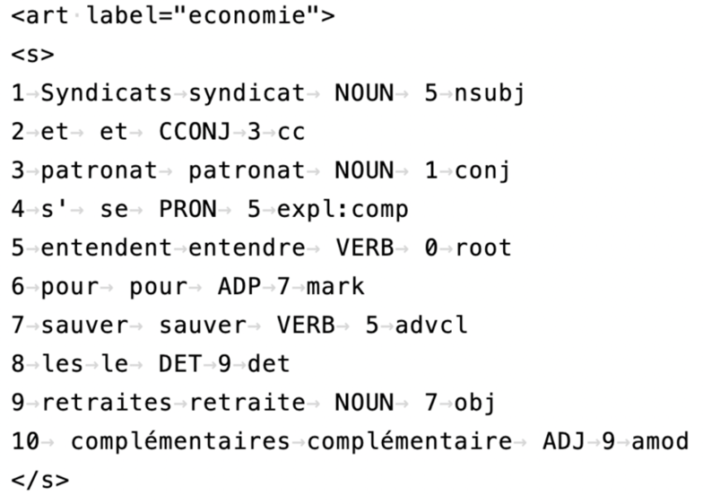
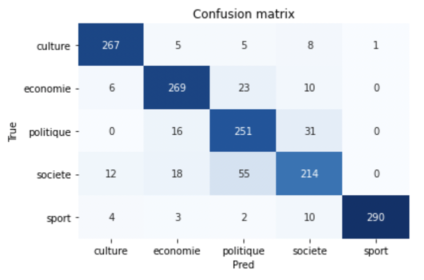
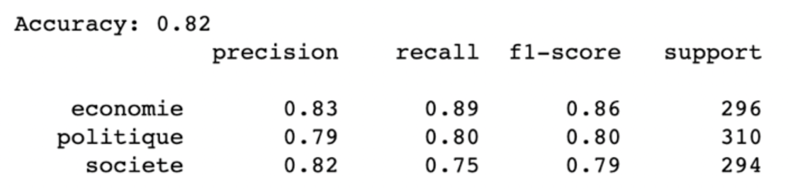
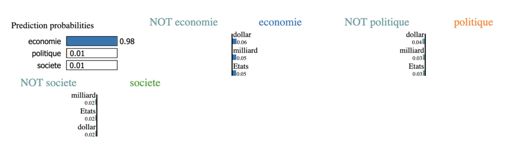

Text Classification: du TF-IDF aux word embeddings en passant par features expertes 🇫🇷¶
Introduction¶
La classification de textes est une tâche courante en traitement automatique des langues (TAL). Dans ce tutoriel nous allons explorer diverses features (TF-IDF, plongement lexical, features linguistiques) alimentant à leur tour des modèles variés dont entre autres la régression logistique, classification naïve bayésienne et perceptron multicouche.
Le but de ce tutoriel est de construire un classifieur qui permet de catégoriser correctement des textes en 3 classes : société, économie et politique.
Le corpus a été construit grâce au site des archives de « le monde ». Regardez ici pour un tutoriel rapide.
Une mise en parallèle a été soigneusement construite pour montrer l’efficacité des vecteurs lexicaux entraînés sur un corpus spécifique qui atteint la même performance d’un modèle à partir du corpus frWac de 1.6 milliards de mots (Fauconnier, 2015).
Le package Lime (Ribeiro et al., 2016) a été utilisé pour comprendre et par la suite améliorer les features.
Quelques features linguistiques dites expertes ont été construites pour améliorer la performance de classification suite à une sélection manuelle s’appuyant sur la régression logistique.
Ce tutoriel est un issu d’un travail d’équipe, nous avons veillé au bon déroulement et à la bonne répartition des tâches en mettant en place toute une panoplie d’outils en logistique comme
la méthode agile, Github,Omniplan(outil de gestion de projet) et un document Google Docs auquel vous pouvez vous référer pour revoir comment ce tutoriel d’équipe a été réalisé pendant plus d’un mois.
La répartition des tâches est illustrée succinctement par la Figure 1 :

Figure 1 : Répartition des tâches pendant l’écriture de ce tutoriel
Structure du tutoriel¶
Nous présentons le prétraitement de notre corpus.
Ensuite nous utilisons TF-IDF comme feature et un classifieur bayésien pour établir une baseline. Le package
Limeest utilisé pour comprendre le fonctionnement du classifieur qui a ensuite permis une légère amélioration de performance.La baseline établie, divers modèles vectoriels sont entraînés sur des corpus de différentes tailles en utilisant différents paramètres. Cela nous a permis d’étudier les effets des paramètres et de la taille du corpus d’entraînement.
Enfin pour davantage augmenter la précision de classification nous introduisons quelques features linguistiques expertes, ces dernières étant soumises à un test basé sur la régression logistique pour que les features les plus pertinentes puissent être mises en avant.
Prétraitement du corpus¶
Nous avons scrapé 9000 articles par thème. Les thèmes principaux sont : société, sport, économie, culture et politique. Nous avons ensuite sélectionné aléatoirement 1000 articles pour la tâche de classification.
La tokenisation a été effectuée avec le package Stanza (Qi et al., 2020). Ce tokeniseur a notamment l’avantage de regrouper par défaut des mots séparés par tiret du type « gratte-ciel », alors que dans Spacy un tel comportement nécessite une configuration ad hoc engendrant d’autres problèmes.
Nous avons aussi essayé de regrouper les entités nommées dans un seul token car cela permet de garder des informations sémantiques intactes. Dans Spacy il est facile d’y procéder ainsi mais dans Stanza il n’existe pas de fonction pré-définie. Nous avons donc soumis un issue sur Github et proposé notre propre solution sur le même lien au cas où cela pourrait servir la communauté.
Ensuite nous avons lemmatisé les tokens et enlevé les mots vides et ponctuation. Pour la liste des mots vides nous avons combiné les ensembles proposés par NLTK et Spacy. Notons que cette étape, en enlevant les tokens peu pertinents à chaque document, constitue en essence une tentative de réduction de dimensionnalité.
Enfin nous avons mis tous les tokens en minuscules. L’ensemble des opérations est illustré par la Figure 2 :
Figure 2 : Prétraitement en amont des articles en vue de la classification
Notons que nous avons aussi préparé une version enrichie du corpus en xml pour calculer des features expertes. Il y a en tout 6 colonnes signifiant id, token, lemme, partie du discours, tête et relation de dépendance. Par contraintes d’espace nous ne détaillons pas la procédure de préparation. Chaque article est enchâssé dans le tag <art> avec label comme attribut et classe comme valeur. Ensuite chaque phrase est contenue dans un tag <s>. La Figure 3 montre la structure du fichier xml :

Figure 3 : Structure du corpus enrichi en xml
Classification de textes¶
Établissement d’une baseline¶
Vu que notre classifieur recourra principalement au plongement lexical, il nous a paru utile d’établir une baseline en utilisant un vecteur TF-IDF.
Un document peut être représenté de diverses façons selon le traitement des mots contenus dans le document. Le modèle le plus simple est le sac de mots qui compte l’occurrence de chaque token afin de générer une matrice documents-termes (MDT). Ce modèle est quelque peu simpliste car l’occurrence des tokens augmente en fonction de la longueur du document. Pour remédier à ce défaut la MDT peut être modifiée pour représenter non plus la fréquence absolue mais la fréquence relative des tokens. Cependant il subsiste toujours le problème des mots vides car ces derniers sont quasiment toujours les plus fréquents (cf. la loi de Zipf à ce propos).
Pour faire face à ce problème une autre mesure est proposée : celle de TF-IDF, la formule de cette mesure est la suivante :
Figure 4 : Formule de TF-IDF¶
L’efficacité de cette mesure est basée sur l’hypothèse selon laquelle un terme doit être à la fois fréquent et spécifique à un document pour caractériser ce dernier. Notons que cette feature est peu gourmande en termes de calcul.
Nous avons utilisé scikit-learn pour implémenter la classification. La feature est représentée par le vecteur TF-IDF et le classifieur utilisé est le classifieur bayésien. Nous avons utilisé un split de 0.3, ce qui fait qu’environ 300 articles par thème ont été utilisés comme test. Le random state a été configuré à 42 pour garantir la reproductibilité de notre travail.
Dans un premier temps nous avons essayé de classifier tous les 5 thèmes pour en sélectionner ceux qui présentent le plus de difficultés. La Figure 5 montre la performance du classifieur sur les articles de 5 thèmes :

Figure 5 : Matrice de confusion du classifieur bayésien sur les articles de 5 thèmes
Le fait que les classes économie, politique et société sont les plus faciles à confondre pour le classifieur nous a décidés à choisir ces 3 thèmes pour notre projet. La Figure 6 rapporte les métriques principales à l’issue de cette sélection :

Figure 6 : Métriques classiques pour la classification de textes sur les articles en 3 thèmes
Vous pouvez voir que la classe économie est la mieux classée et les deux autres présentent une plus grande confusion, ce qui est plutôt attendu car la classe économie renvoie à une notion plus restreinte.
Avec le package Lime nous avons pu voir comment est procédé le classifieur pour classer les articles, la Figure 7 montre l’exemple d’un seul article. L’interprétation de cette figure est plutôt intuitive : La légende d’en haut à gauche présente les probabilités respectives que cet article appartient aux 3 classes (la somme = 1). Lorsque le score se situe à droite, il contribue positivement à la classification.

Figure 7 : Contribution des termes à la classification d’un article
Les fonctionnalités proposées par Lime nous ont incités à faire un post-traitement susceptible d’augmenter la performance du classifieur. Nous avons extrait les 3 premiers termes de chaque prédiction de classe au cas où la prédiction serait mauvaise. Cette liste de termes constitue par la suite une liste de « mots inadéquats » avec laquelle nous filtrons le texte de chaque article. Nous avons ensuite ré-entraîné le classifieur, portant l’accuracy global de 0.82 à 0.85. Ce score de 0.85 a été retenu par la suite comme benchmark pour notre tâche de classification.
Classification à base du plongement lexical¶
Dans cette sous-section nous allons utiliser le plongement lexical pour caractériser un mot et par la suite un article en prenant la moyenne de tous les vecteurs lexicaux constituant l’article.
Le plongement lexical vise à représenter un mot par un vecteur de nombres réels. Autrement dit, le principe fondamental consiste à représenter un concept linguistique par l’intermédiaire d’une représentation mathématique. Le mot « chien » serait représenté par exemple par un vecteur à 3 dimensions [1.3, 2.2, 4,1].
Au cours de la recherche d’une représentation mathématique adéquate, certaines idées ont permis d’éclairer le chemin dont entre autres l’hypothèse distributionnelle de Harris (distributional hypothesis, (Harris, 1954)) dans le domaine de la sémantique distributionnelle. On retiendra aussi la fameuse phrase de Firth : Vous connaîtrez un mot par ses voisinages (You shall know a word by the company it keeps (Firth, 1957)). L’implémentation informatique la plus courante de cette idée est basée sur l’article de (Mikolov et al., 2013). Notons que le plongement lexical est en essence le produit d’une tâche reposant elle-même sur l’entraînement d’un réseau de neurones . Deux tâches sont possibles pour obtenir les vecteurs : soit on essaie de prédire un mot à partir de son contexte (CBOW), soit on prédit l’entourage d’un mot (Skip-gram).
Pour entraîner le modèle vectoriel nous avons utilisé différents corpus et différents paramètres. La Table 1 récapitule les informations pertinentes (Les deux modèles FrWac ont été téléchargés sur https://fauconnier.github.io/) :
|
|
|
|
|---|---|---|---|
|
|
|
|
|
|
|
|
|
|
|
|
|
|
|
|
Table 1 : Modèles vectoriels utilisés pour la classification de textes
Pour évaluer l’effet de modèle sur la performance de classification, nous avons commencé par utiliser la régression logistique qui aboutit à une décision binaire. Les résultats sont présentés dans la Table 2 :
|
|
|
|---|---|---|
|
|
|
|
|
|
|
|
|
|
|
|
|
|
|
|
|
|
Table 2 : Performance des classifieurs binaires en fonction du modèle vectoriel
Cette table nous permet de faire deux remarques :
l’augmentation de la dimensionnalité ne s’accompagne pas d’une augmentation de performance.
l’augmentation du nombre d’articles augmente la performance des vecteurs dans la tâche de classification. Cependant nous pouvons voir que l’accuracy des classes politique et société reste bas et le changement de modèle aussi bien sur le plan dimensionnel que sur le plan du nombre d’articles, apporte un gain de performance plus faible par rapport à d’autres combinaisons de classes.
Nous utilisons ensuite divers classifieurs multi-classes (onevsRest, kNeighbors, SVM, Bayésien, Perceptron multicouche, etc.) pour mener la même comparaison de modèles, sans inclure l’effet de dimensionnalité.
Nous présentons ici que les meilleurs résultats obtenus par SVM car le but de ce travail n’est pas d’étudier les différences d’algorithmes, d’autant plus qu’il existe aujourd’hui un champ d’études appelé automated machine learning qui permet de chercher automatiquement le meilleur algorithme avec les meilleurs paramètres pour une tâche donnée.
La Table 3 récapitule les résultats :
|
|
|
|---|---|---|
|
|
|
|
|
|
|
|
|
Table 3 : Performance des classifieurs multi-classes en fonction du modèle vectoriel
L’importance du corpus pour l’entraînement des vecteurs mérite d’être soulignée. En augmentant le nombre d’articles de 3000 à 24000, l’accuracy est passé de 0.74 à 0.82, dépassant le score du modèle FrWac entraîné sur 1.6 milliards de mots. Cela montre qu’un corpus spécifique est important et ce corpus peut s’avérer plus pertinent qu’un corpus de grande taille pour la tâche de classification de textes.
Cependant, les F1 scores des classes politique et société restent bas. Ils sont respectivement 0.75 et 0.76, ce qui fait que l’accuracy général du classifieur SVM est inférieur au benchmark TF-IDF (0.82 vs 0.85).
Elaboration des features dites expertes¶
Pour améliorer davantage notre classifieur SVM, nous avons calculé 5 features supplémentaires : diversité lexicale, distance cosinus entre un article et 4 termes les plus fréquents à chaque classe et enfin, un vecteur one-hot à 12 dimensions construit sur l’absence et la présence des 4 termes mentionnés plus haut. La diversité lexicale a été calculée en divisant le nombre de tokens uniques par le nombre de tokens total.
Pour évaluer l’effet de chaque feature, nous avons tout d’abord exclu le vecteur du document et utilisé la régression logistique (méthode Newton-conjugate gradient) en gardant uniquement les features expertes. Les valeurs P>|z| nous indiquent que la diversité lexicale est peu probable de contribuer à la classification (0.986). En revanche, les distances cosinus et le vecteur one-hot sont tous pertinents (toutes les valeurs sont inférieures à 0.05).
Nous avons donc intégré ces deux features dans le classifieur SVM. L’accuracy général est monté à 0.85 et les F1 scores montés à 0.80 pour les classes politique et société.
Conclusions et perspectives¶
Nous avons donc construit un corpus de 5 thèmes, appliqué un prétraitement typique sur les textes de chaque article, extrait et élaboré des features et enfin testé les features sur divers classifieurs.
Quelques points méritent d’être mentionnés :
L’efficacité du plongement lexical est relativement indépendante du nombre de dimensions dans la tâche de classification de textes. En revanche, la taille du corpus est importante ainsi que la nature du corpus. Les vecteurs entraînés sur le corpus de 24000 articles ont atteint quasiment la même performance que les vecteurs entraînés sur le corpus FrWac.
Les features expertes sont utiles pour augmenter la performance de classification. Cela met en évidence l’importance des connaissances spécifiques au domaine (Domain-Specific Knowledge).
Lime permet d’expliquer les méthodes de machine learning et d’améliorer la performance des méthodes. Dans la section 4.1, nous avons montré que la suppression des mots non pertinents à la classification permet d’augmenter l’accuracy de 0.82 à 0.85.
Tutoriels à venir¶
Dans le domaine de la classification de textes, les réseaux de neurones du type RNN ont fait preuve d’efficacité. Des modèles de langues pré-entraînés du type Bert (Vaswani et al., 2017) ont davantage poussé les limites de performance. Des features linguistiques basés sur les propriétés morpho-syntaxiques des tokens peuvent aussi s’avérer utiles.
A très bientôt pour plus de tutoriels :D
Références¶
Fauconnier, J.-P. (2015). French word embeddings.
Firth, J. R. (1957). A synopsis of linguistic theory, 1930-1955. Studies in Linguistic Analysis.
Harris, Z. S. (1954). Distributional structure. Word, 10(2–3), 146–162.
Mikolov, T., Chen, K., Corrado, G., & Dean, J. (2013). Efficient estimation of word representations in vector space. ArXiv Preprint ArXiv:1301.3781 . Qi, P., Zhang, Y., Zhang, Y., Bolton, J., & Manning, C. D. (2020). Stanza: A Python natural language processing toolkit for many human languages. ArXiv Preprint ArXiv:2003.07082 . Ribeiro, M. T., Singh, S., & Guestrin, C. (2016). “Why Should I Trust You?”: Explaining the Predictions of Any Classifier. ArXiv:1602.04938 [Cs, Stat]. http://arxiv.org/abs/1602.04938
Vaswani, A., Shazeer, N., Parmar, N., Uszkoreit, J., Jones, L., Gomez, A. N., Kaiser, L., & Polosukhin, I. (2017). Attention is all you need. ArXiv Preprint ArXiv:1706.03762.